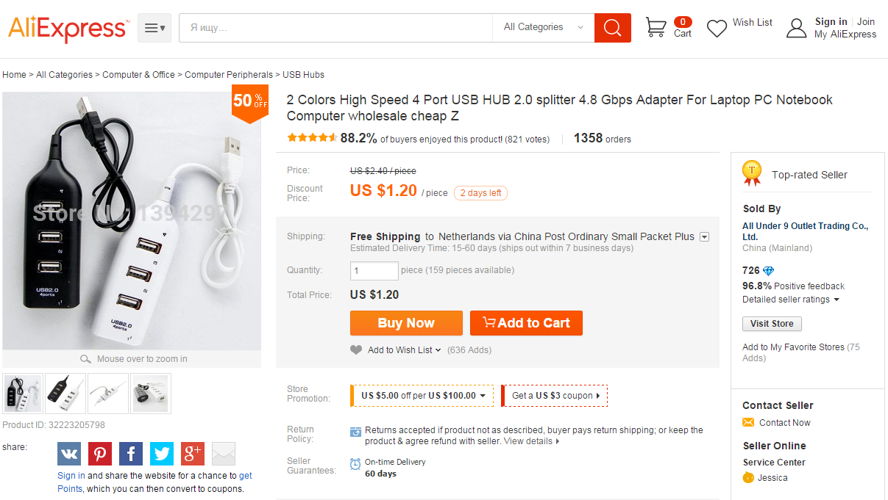
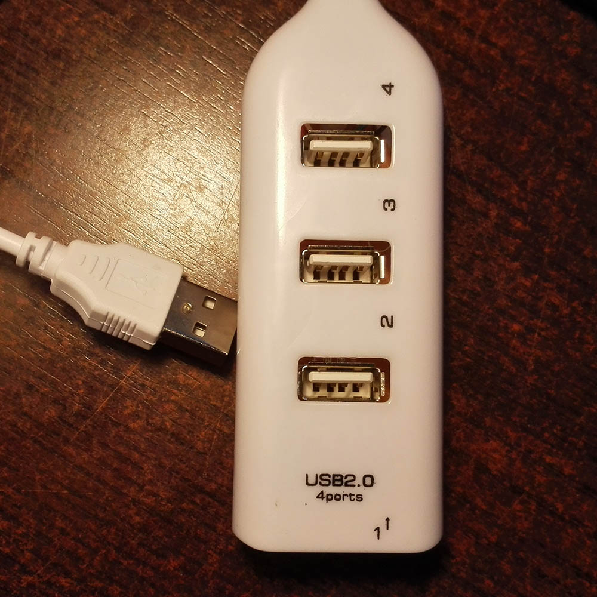
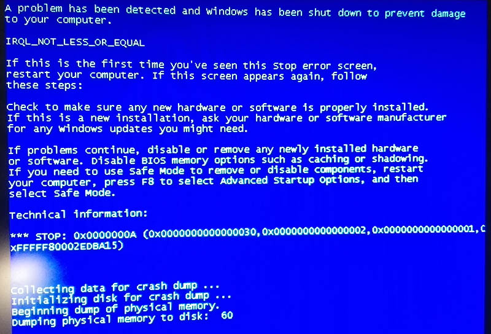
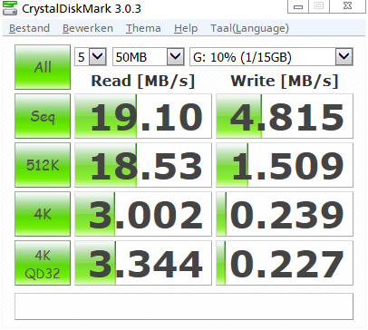
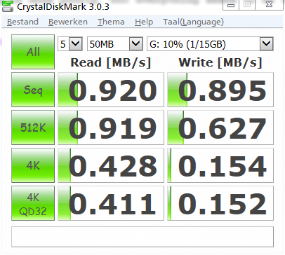
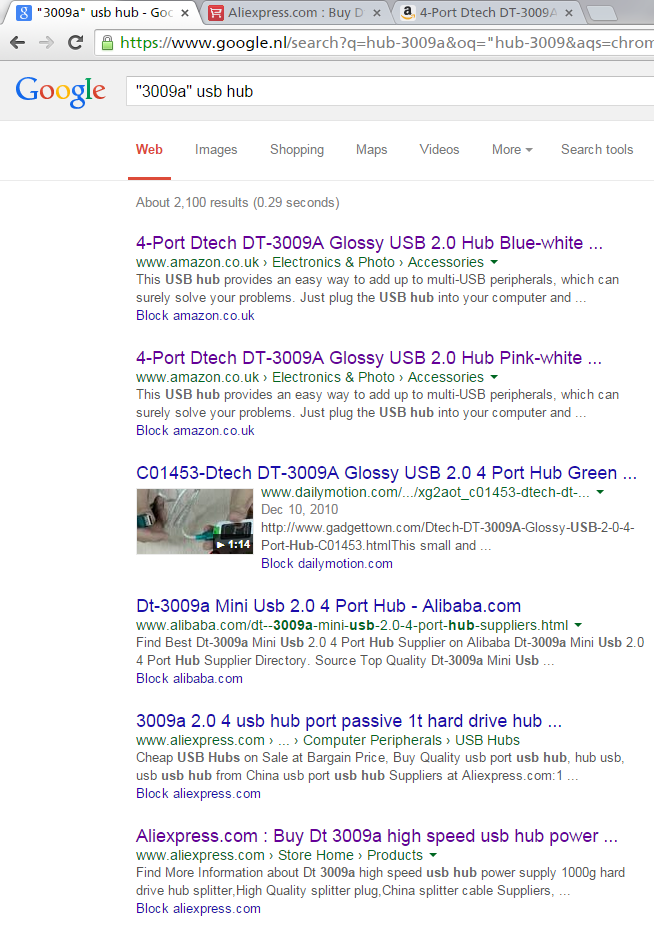
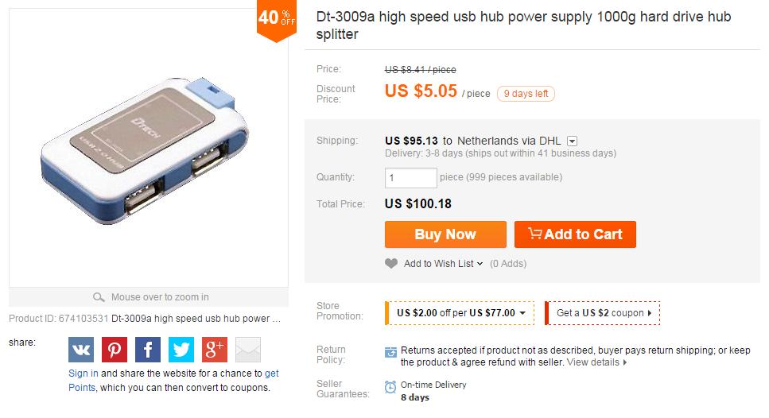

€ 1 USB hub review
Introduction
There are many reasons to buy electronics (among others) directly from China, on websites such as AliExpress, DealXtreme or eBay. Besides having almost every possible component in stock, the main reason is price. Usually I don't mind paying a few euros more to buy an item nearby, but now I needed a USB hub. Prices from domestic shops started at €6 excluding shipping, which seemed a bit steep for some USB ports. For some time I went by without any USB hub, until I was browsing AliExpress, and found this:

(Hover to zoom)
Link to the item: http://www.aliexpress.com/item/...5798.html
This was worth trying, and according to the reviews, it was really a functioning hub.
First impressions
Fast-forward 2 weeks, and I received the two hubs I ordered. First impression: cheap. They feel really cheap. Very light, and purely functional design. The quality would be best compared to the gadgets you get for free during fairs and information markets. Upon further inspection, the build quality doesn't seem that bad, there's no rattling, the plastic is quite thick and sturdy and the USB cable feels sturdy as well.  This is it.
Functionality
I just went for it and plugged an unknown cheap USB device into my laptop, hoping that my USB ports would survive. They did. And within a second, Windows had found the drivers for the hub already. When you plug a USB device into the hub, it actually has to install more drivers, but that process is also finished almost instantly. So far so good.
For me, the hub is used to connect my laptop to a wired mouse and keyboard, with occasionally connecting my phone for data transfer over MTP. The good news is that the €1 USB hub can do that. The bad news is that it's not 100% stable. Sometimes my keyboard and mouse stop working randomly, and on other occasions, the some key presses are lost or repeated. All of this doesn't happen often, so the hub is pretty usable, but it's definitely not a quality product. The worst issue I encountered was a BSOD when I plugged in a WLAN adapter (TPLink TL-WN823N). Apparently this is solvable, so I'll give the possible solution a go, and report back. 
I've also noticed that the transfer speed when copying files through the hub is significantly slower than though the native USB 2.0 ports. Using Crystaldiskmark, I have verified this for a microSD card.  Native USB 2.0 port  Connected to the hub That's pretty dramatic.
Teardown
Products like this always trigger curiosity: how do they make it that cheap?
Opening up the hub is very easy. Weird enough, one of my hubs used 2 screws to hold the top and bottom casing together, the other one was held on solely by the pastic pins. To see what's inside, view the following slideshow.
 Bottom of PCB. The controller is mounted using the Chip on Board technique. Note the model number '3009A'.
Bottom of PCB. The controller is mounted using the Chip on Board technique. Note the model number '3009A'.
 Closer up. You can see that the soldering is done poorly, but everything seems to be fixed well for now.
Closer up. You can see that the soldering is done poorly, but everything seems to be fixed well for now.
 A quick Google search on the '3009A' usb hub It seems like the controller inside is either the same, or a clone of the 'Dtech 3009A' USB hub. 
Final words
Should you buy this product? No, buy something that works all the time, looks nice and is faster. Apparently a good USB hub is expensive to make. Only if you intend to use the hub with data extensive non-critical devices, it may be worth considering.
I'm going to try and use it for a longer time, and see if some of the stability issues can be fixed. If not, then I've got some female USB A sockets for decent value.